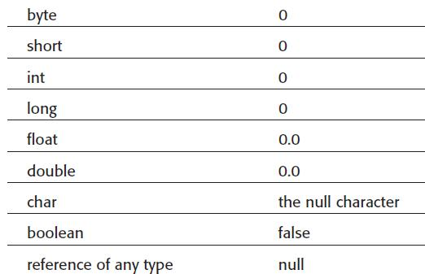

Στο σημερινό δωρεάν μάθημα Java θα εξηγήσουμε τι είναι κλάση και πως την χρησιμοποιούμε για να δημιουργήσουμε αντικείμενα. Όπως καταλαβαίνετε αρχίζει το ταξίδι μας στον κόσμο του object-oriented programming. Στις προηγούμενες ενότητες μιλήσαμε για τις βασικές αρχές της java γλώσσας προγραμματισμού. Αν και καλύψαμε σχεδόν όλα εκείνα τα στοιχεία από τα οποία αποτελείται ένα απλό πρόγραμμα java, μας έχουν απομείνει μερικά ακόμα (όπως πχ. η έννοια της μεθόδου) τα οποία θα έχουμε την ευκαιρία και να αναλύσουμε και να καταλάβουμε όταν μιλήσουμε για κλάσεις και αντικείμενα.
Η Java έχει δημιουργηθεί εξ αρχής να είναι μια αντικειμενοστραφής γλώσσα προγραμματισμού. Οτιδήποτε κώδικα και αν γράψετε θα περιέχεται είτε σε μια κλάση (class) είτε σε ένα interface. Αλλά τι είναι κλάση? Ας πάρουμε τα πράγματα από την αρχή.
Ας θεωρήσουμε ότι μας έχουν αναθέσει να γράψουμε ένα πρόγραμμα μέσα από το οποίο κρατάμε πληροφορίες για τους εργαζόμενους μιας εταιρείας. Αυτό που πρέπει να κάνουμε σαν πρώτο βήμα είναι να αναρωτηθούμε ποιο είναι το αντικείμενο ενδιαφέροντος σε αυτό το πρόβλημα. Η απάντηση είναι απλή – ο εργαζόμενος. Βασικά, κάθε ουσιαστικό όνομα, όπως εργαζόμενος, αμάξι, τιμολόγιο κτλ, είναι αυτό που στην πραγματικότητα μας ενδιαφέρουν. Οπότε, πως μπορούμε να αντιπροσωπεύσουμε ένα φυσικό αντικείμενο προγραμματιστικά? Με μια κλάση και αυτός μπορεί να θεωρηθεί και ο γενικός μας κανόνας: μια κλάση είναι η προγραμματιστική αντιπροσώπευση ενός φυσικού αντικειμένου. Με την ίδια λογική αν μας είχαν αναθέσει να δημιουργήσουμε ένα πρόγραμμα για ένα εργοστάσιο που φτιάχνει αμάξια, τότε ένα από τα αντικείμενα μας που θα έπρεπε να αντιπροσωπεύσουμε προγραμματιστικά με μια κλάση θα ήταν το αυτοκίνητο με όλα του τα είδη. Με αυτό τον ορισμό, όσο και απλός να φαίνεται, δεν πρόκειται να κάνετε ποτέ λάθος στην δημιουργία προγραμμάτων.
Ωραία, οπότε για να αντιπροσωπεύσουμε τον εργαζόμενο για τον οποίο ξεκινήσαμε να μιλάμε, χρειάζεται να δημιουργήσουμε μια κλάση. Και πως δημιουργούμε μια κλάση? Αυτό το έχετε κάνει ήδη σε όλα τα προγράμματα που έχουμε γράψει μέχρι τώρα. Η γενική δομή μιας κλάση είναι η εξής:
class classname {
}
Ο ορισμός μιας κλάσης απαιτεί το λέξη κλειδί class και αμέσως μετά το όνομα της κλάσης. Ο κώδικας της κλάσης θα περικλείεται μέσα σε άγκιστρα ( { }).
Οπότε ας δημιουργήσουμε ένα καινούργιο project με το όνομα EmployeeDemo με ένα πακέτο com.mycompany και μέσα στο πακέτο ας δημιουργήσουμε την κλάση employee.
Employee.java
package com.mycompany; class Employee{ }
Δημιουργήσαμε μια κλάση και την ονομάσαμε Employee αλλά πως μπορούμε προγραμματιστικά να περιγράψουμε την έννοια του εργαζόμενου?
Κάθε κλάση μπορεί να περιγράφει τα αντικείμενα της χρησιμοποιώντας δύο εργαλεία: μεταβλητές και μεθόδους. Οι μεταβλητές θα περιγράφουν τα χαρακτηριστικά του αντικειμένου ενώ οι μέθοδοι τις ιδιότητες του δηλαδή το τι μπορεί να κάνει το αντικείμενο. Στο δικό μας παράδειγμα, θα ασχοληθούμε μόνο με τις μεταβλητές. Όταν αργότερα μάθουμε και τι σημαίνει μέθοδος τότε θα την προσθέσουμε και αυτή στην κλάση μας.
Ποιες ακριβώς πληροφορίες χρειάζεται να ξέρουμε για τον κάθε εργαζόμενο? Ας θεωρήσουμε πως θέλουμε να γνωρίζουμε το όνομα, το ΑΦΜ, τον αριθμό εργαζόμενου στην εταιρεία, το μισθό του και το τμήμα στο οποίο εργάζεται. Φυσικά θα μπορούσαμε να προσθέσουμε πολλές περισσότερες λεπτομέρειες αλλά αυτές είναι αρκετές για το παράδειγμα μας.
Όπως ήδη έχουμε αναφέρει, αυτά τα χαρακτηριστικά που θέλουμε να γνωρίζουμε πρέπει να δηλώσουμε σαν μεταβλητές στην τάξη. Η δήλωση των μεταβλητών είναι ίδια με αυτή που ήδη γνωρίζετε με την επιπλέον πληροφορία της πρόσβασης ή όπως αλλιώς ονομάζεται access specifier. Για την σωστή δήλωση μιας μεταβλητής χρειαζόμαστε λοιπόν να ορίσουμε τρεις όρους:
Μπορεί η έννοια των μεταβλητών σε επίπεδο κλάσεων να μην σας είναι ακόμα ξεκάθαρη αλλά περιμένετε λίγο ακόμα και θα την καταλάβετε απόλυτα. Ας προσθέσουμε λοιπόν τις μεταβλητές μας στην κλάση. Ο καινούργιος κώδικας είναι ο εξής:
Employee.java
package com.mycompany; class Employee{ public String name; public int AFM; public int employeeId; public double salary; public String department; }
Έχουμε λοιπόν μια ολοκληρωμένη κλάση που περιγράφει τον εργαζόμενο. Στις μεταβλητές δεν ορίζουμε αρχικές τιμές εμείς γιατί δεν ανήκουν στην κλάση αλλά στο αντικείμενο που πρόκειται να δημιουργήσουμε. Για αυτό και άλλωστε αυτές οι μεταβλητές ονομάζονται instance variables. Αυτό σημαίνει ότι κάθε αντικείμενο που θα δημιουργήσουμε θα περιέχει όλες αυτές τις μεταβλητές που θα λάβουν τις κατάλληλες τιμές ανάλογα με τον εργαζόμενο που θέλουμε να περιγράψουμε. Εξ αρχής όλες οι τιμές έχουν μηδέν τιμές με βάση τους κανόνες της java.
Τι είναι λοιπόν μια κλάση? Η προγραμματιστική αντιπροσώπευση ενός αντικειμένου. Και σε τι χρησιμεύει η κλάση? Είναι το καλούπι που μπορούμε να δημιουργήσουμε αντικείμενα είδους Employee. Να λοιπόν γιατί όλοι περιγράφουν τις κλάσεις σαν καλούπια, γιατί από εκεί μπορούμε να δημιουργήσουμε αντικείμενα. Εμείς όμως ξεκινήσαμε ένα βήμα ποιο πίσω και περιγράψαμε πως δημιουργούμε μια κλάση.
Η κλάση Employee είναι έτοιμη. Όμως, όπως ήδη γνωρίζεται, κανένα πρόγραμμα στην java δεν εκτελείται αν δεν υπάρχει η main() μέθοδο. Οπότε έχουμε δημιουργήσει το καλούπι που θα δημιουργήσει αντικείμενα Employee αλλά ακόμα δεν έχουμε δυνατότητα να εκτελέσουμε τίποτα. Πως το κάνουμε αυτό?
Ο καλύτερος τρόπος είναι να δημιουργήσουμε μια ακόμα κλάση που θα περιέχει την main( ) μέθοδο από την οποία θα καλέσουμε όλες τις άλλες κλάσεις που έχουμε δημιουργήσει και από τις οποίες θα δημιουργήσουμε αντικείμενα. Ας δημιουργήσουμε στο ίδιο πακέτο μια ακόμα κλάση με το όνομα EmployeeDemo με τον εξής κώδικα:
EmployeeDemo.java
package com.mycompany; public class EmployeeDemo { public static void main(String []args){ } }
Ο κώδικας της main( ) ακόμα δεν δημιουργεί ούτε χειρίζεται κάποιο αντικείμενο. Τι χρειάζεται να γράψουμε λοιπόν για να δημιουργήσουμε το πρώτο μας αντικείμενο? Ας γράψουμε πρώτα τον κώδικα και μετά θα τον εξηγήσουμε.
Employee michail = new Employee();
Εδώ κρύβεται όλη η θεωρία και η έννοια του object-oriented programming. Ας δούμε όμως τι ακριβώς συμβαίνει.
Κάθε φορά που δημιουργούμε μια απλή κλάση, η java μας προσφέρει έναν μηχανισμό που ονομάζεται constructor για να μπορούμε να δημιουργήσουμε αντικείμενα από αυτή την κλάση. Ο constructor μοιάζει σαν μέθοδο γιατί έχει όνομα και ακολουθείται από παρένθεση αλλά με μια μεγάλη διαφορά – το όνομα του constructor είναι πάντα ίδιο με το όνομα της κλάσης. Με αυτό τον τρόπο ξέρει η java από ποια κλάση να δημιουργήσει το αντικείμενο που χρειαζόμαστε. Για να ολοκληρωθεί όμως η διαδικασία πρέπει να προσθέσουμε μπροστά από τον constructor την λέξη κλειδί new. Οπότε αυτό που έχουμε καταφέρει μέχρι τώρα είναι να δημιουργήσουμε ένα καινούργιο αντικείμενο στην μνήμη του υπολογιστή μας. Η εντολή που το έχει πραγματοποιήσει αυτό είναι ο κώδικας που βρίσκεται στην δεξιά πλευρά του ίσον συμβόλου
new Employee();
Εδώ αρχίζουμε να βλέπουμε πως η Java διαφέρει από άλλες γλώσσες προγραμματισμού όπως πχ. C και C++. Όταν δημιουργείται ένα αντικείμενο η Java δεν μας αφήνει να έχουμε άμεση πρόσβαση στο αντικείμενο γιατί θέλει εκείνη να έχει την ευθύνη διαχείρισης της μνήμης και κυρίως για την δημιουργία και διαγραφή των αντικειμένων από την μνήμη για να αποφεύγονται τυχόν memory leaks. Αυτό είναι ένα μεγάλο πλεονέκτημα για μας γιατί αν γράφαμε σε άλλη γλώσσα προγραμματισμού θα έπρεπε να ακολουθούμε το αντικείμενο από την στιγμή της δημιουργίας του μέχρι και την διαγραφή του. Αυτό θα απαιτούσε πολύ κώδικα και πολύ προσπάθεια από εμάς. Ευτυχώς όμως η java μας απαλλάσσει από αυτή την διαδικασία με έναν δικό της εσωτερικό μηχανισμό που ονομάζεται garbage collector και είναι ενεργοποιημένος από την στιγμή που εγκαταστήσαμε το JDK της java στον υπολογιστή μας. Αν όμως η java δεν μας αφήνει να έχουμε πρόσβαση στο αντικείμενο που μόλις δημιουργήσαμε πως θα μπορέσουμε να δώσουμε τιμές στα χαρακτηριστικά του εργαζόμενου? Η απάντηση είναι απλή – η δημιουργία ενός reference που δείχνει στο αντικείμενο. Εδώ επεμβαίνει η αριστερή πλευρά του ίσον συμβόλου στον κώδικα που είχαμε γράψει νωρίτερα.
Employee michail
Η java λοιπόν δεν μας αφήνει να έχουμε απευθείας αλληλεπίδραση με την μνήμη και την διαχείριση των αντικειμένων. Μας επιτρέπει όμως, για πρακτικούς λόγους, να δημιουργήσουμε ένα reference που θα δείχνει στο αντικείμενο που έχουμε δημιουργήσει. Στο δικό μας παράδειγμα αυτό το reference είναι το όνομα michail. Ενώ εμείς λοιπόν διαχειριζόμαστε το reference (michail), η java διαχειρίζεται το αντικείμενο στο οποίο αναφέρεται το reference. Τι σημαίνει όμως το Employee πριν το reference?
Κάθε μεταβλητή που δημιουργούμε στην java έχει και ένα data type, το ίδιο πρέπει να κάνουμε και με τα references. Μόνο που εδώ δεν θα ορίσουμε κάποιο primitive data type (όπως int double, κτλ) αλλά data type είδος κλάσης. Στην ουσία, και με πολύ απλά λόγια δηλώνουμε ότι το reference michail θα συμπεριφέρεται σαν Employee δηλαδή θα έχει όλες τις ιδιότητες που έχουμε ορίζει σαν μεταβλητές στην κλάση. Γιατί, θα υπήρχε περίπτωση να δημιουργήσουμε ένα αντικείμενο από μια κλάση αλλά να συμπεριφέρεται σαν να είναι δημιουργημένο από μια άλλη? Ναι, υπάρχει και ονομάζεται πολυμορφισμός. Όμως είναι πολύ νωρίς να μιλήσουμε για αυτό ακόμα.
Ας γυρίσουμε πίσω στην γραμμή κώδικα που γράψαμε και ας ανακεφαλαιώσουμε όσα είπαμε μέχρι τώρα. Έχουμε καλέσει τον constructor της κλάσης Employee να δημιουργήσουμε ένα καινούργιο αντικείμενο. Μετά δηλώσαμε ένα reference που να αναφέρεται σε αυτό το αντικείμενο και μάλιστα είπαμε ότι το reference θα συμπεριφέρεται σαν Employee. Τι σημαίνει αυτό? Σημαίνει ότι όταν τώρα στην επόμενη γραμμή του προγράμματος μας γράψουμε michail και τελεία ( . ) θα εμφανιστεί η λίστα με τις μεταβλητές στις οποίες μπορούμε να καθορίσουμε τις τιμές τους για το συγκεκριμένο αντικείμενο. Ορίζουμε λοιπόν για το συγκεκριμένο αντικείμενο τις εξής τιμές:
EmployeeDemo.java
package com.mycompany; public class EmployeeDemo { public static void main(String []args){ Employee michail = new Employee(); michail.AFM = 12345; michail.department = "IT"; michail.employeeId = 100; michail.name = "Michail Kassapoglou"; michail.salary = 10000; } }
Εδώ θα πρέπει να αναφερθούμε σε δύο στοιχεία. Πρώτον είναι το γεγονός ότι πολλοί προγραμματιστές αναφέρονται στον προφορικό τους λόγο κυρίως όταν συνομιλούν με συναδέλφους στην μεταβλητή michail σαν αντικείμενο. Με άλλα λόγια μπορείτε να ακούσετε “δημιουργώ ένα αντικείμενο michail”. Αυτό στην πραγματικότητα είναι λάθος όμως επειδή γνωρίζουν την θεωρία, όπως και εσείς τώρα για λόγους συντομίας το εκφράζουν έτσι. Δεύτερον, είναι το γεγονός ότι και η κλάση Employee και η κλάση EmployeeDemo βρίσκονται στο ίδιο πακέτο οπότε ο constructor της κλάσης Employee ψάχνει εξ ορισμού στο ίδιο πακέτο στο οποίο καλείται και βρίσκει ότι στο ίδιο πακέτο βρίσκεται και η κλάση Employee από την οποία θα δημιουργήσει ένα ή περισσότερα αντικείμενα. Δεν είναι όμως ανάγκη να βρίσκονται στο ίδιο πακέτο. Αυτή την επιλογή θα την δούμε σε μελλοντικές ενότητες.
Το πρόγραμμα μας είναι σχεδόν έτοιμο, αυτό που μας λείπει είναι να εκτυπώσουμε τις πληροφορίες για τον εργαζόμενο michail που μόλις δημιουργήσαμε. Η τελική μορφή λοιπόν του κώδικα μας είναι η εξής:
EmployeeDemo.java
package com.mycompany; public class EmployeeDemo { public static void main(String []args){ Employee michail = new Employee(); michail.AFM = 12345; michail.department = "IT"; michail.employeeId = 100; michail.name = "Michail Kassapoglou"; michail.salary = 10000; System.out.println("Your name is "+ michail.name + " and your employee number is " + michail.employeeId); } }
Output
Your name is Michail Kassapoglou and your employee number is 100
Τέλεια! Έχουμε δημιουργήσει το πρώτο μας ολοκληρωμένο object oriented πρόγραμμα που χρησιμοποιεί αντικείμενα! Μια τελευταία ερώτηση που θέλω να απαντήσω γιατί μπορεί να το έχετε ήδη αναρωτηθεί είναι πότε ο garbage collector διαγράφει τα αντικείμενα. Εμείς τα δημιουργούμε όμως πότε διαγράφονται? Βασικά, αυτό που ελέγχει σε γενικές γραμμές ο garbage collector είναι να δει αν υπάρχουν αντικείμενα στην μνήμη στα οποία δεν υπάρχουν references. Αν βρει ότι υπάρχουν αντικείμενα χωρίς references τότε μέσα σε ένα μικρό χρονικό διάστημα θα καθαρίσει αυτά τα αντικείμενα. Εμείς μπορούμε να προκαλέσουμε μια τέτοια πράξη αν πολύ απλά αναθέσουμε την τιμή null στο reference, δηλαδή να γράψουμε:
michail = null;
Τέλος αν θέλουμε να αλλάξουμε την τιμή σε οποιαδήποτε μεταβλητή δεν έχουμε παρά να γράψουμε το reference.nameofvariable = new value. Για παράδειγμα:
michail.salary=20000
Ας δούμε ένα τελευταίο πρόγραμμα με όλα όσα μιλήσαμε μέχρι τώρα:
EmployeeDemo.java
package com.mycompany; public class EmployeeDemo { public static void main(String []args){ Employee michail = new Employee(); michail.AFM = 12345; michail.department = "IT"; michail.employeeId = 100; michail.name = "Michail Kassapoglou"; michail.salary = 10000; System.out.println("Your name is "+ michail.name + " and your salary is " + michail.salary); michail.salary=20000; System.out.println("Your name is "+ michail.name + " and your new salary is " + michail.salary); michail = null; } }
Output
Your name is Michail Kassapoglou and your salary is 10000.0 Your name is Michail Kassapoglou and your new salary is 20000.0